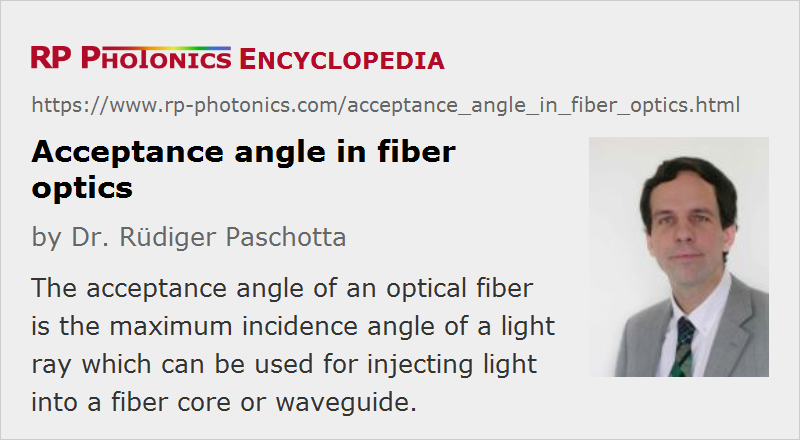

Acceptance Angle in Fiber Optics
Definition: the maximum incidence angle of a light ray which can be used for injecting light into a fiber core or waveguide
German: Akzeptanzwinkel in der Faseroptik
Category: fiber optics and waveguides
How to cite the article; suggest additional literature
Author: Dr. Rüdiger Paschotta
The acceptance angle of an optical fiber is defined based on a purely geometrical consideration (ray optics): it is the maximum angle of a ray (against the fiber axis) hitting the fiber core which allows the incident light to be guided by the core. The sine of that acceptable angle (assuming an incident ray in air or vacuum) is called the numerical aperture, and it is essentially determined by the refractive index contrast between core and cladding of the fiber, assuming that the incident beam comes from air or vacuum:
Here, ncore and ncladding are the refractive indices of core and cladding, respectively, and n0 is the refractive index of the medium around the fiber, which is close to 1 in case of air.
Further Remarks
The concept of ray optics is not fully appropriate for describing the operation details of optical fibers, because wave aspects are important – particularly for fibers with small core such as single-mode fibers, while the approximation is more appropriate for large-core multimode fibers. A real light beam (for example, a laser beam) is not well resembled by a ray, since it inevitably has both a finite beam radius and a finite beam divergence. Therefore, there is in reality not a well-defined transition between guidance and non-guidance, when a beam angle is varied. However, the acceptance angle gives at least some estimate concerning how large an incidence angle may be for efficiently launching light.
Note that the term acceptance angle also plays a role in nonlinear optics – see the article on critical phase matching.
Questions and Comments from Users
Here you can submit questions and comments. As far as they get accepted by the author, they will appear above this paragraph together with the author’s answer. The author will decide on acceptance based on certain criteria. Essentially, the issue must be of sufficiently broad interest.
Please do not enter personal data here; we would otherwise delete it soon. (See also our privacy declaration.) If you wish to receive personal feedback or consultancy from the author, please contact him e.g. via e-mail.
By submitting the information, you give your consent to the potential publication of your inputs on our website according to our rules. (If you later retract your consent, we will delete those inputs.) As your inputs are first reviewed by the author, they may be published with some delay.
See also: numerical aperture, fibers, waveguides, total internal reflection, fiber optics
and other articles in the category fiber optics and waveguides
|  |
If you like this page, please share the link with your friends and colleagues, e.g. via social media: 


These sharing buttons are implemented in a privacy-friendly way! |
2020-07-04
If a fiber is immersed in water, how does that change its acceptance angle?
Answer from the author:
The acceptance angle is substantially reduced, as you can calculate with the formula given above.